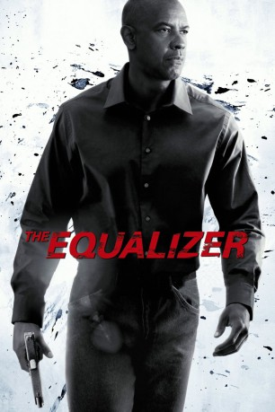

#104 The Equalizer
 
 IMDB-Wertung: 7.2 / 10
IMDB-Wertung: 7.2 / 10  Metascore: 57
Metascore: 57 
Robert McCall führt als Angestellter in einem Baumarkt ein unscheinbares Leben. Was niemand weiß und wissen soll: McCall ist ein ehemaliger Agent eines Spezialkommandos, hatte seinen eigenen Tod vorgetäuscht und versucht nun, seine neue Identität und sein relativ friedliches Leben in Boston vor den Schatten der Vergangenheit zu schützen. Doch seine zurückgezogene Lebensweise, Ernsthaftigkeit und Liebe zur Gerechtigkeit machen ihn zu einem ausgezeichneten Ermittler - und so kommt es, wie es kommen muss: Die junge Prostituierte Teri wird von Gangstern bedroht, sie bedarf der Rettung durch McCalls kampfgeschulte Hände. Seine Tarnung droht aufzufliegen, aber er wäre nicht der Equalizer, wenn er kneifen würde.
Jahr: 2014
Dauer: 132 Minuten
FSK: 16
Land: USA Studio: Columbia PicturesTonspuren: DTS-HD - ,
Untertitel: Deutsch, Englisch, Französisch, ,
Auflösung: 1080p (1920×808) Größe: 16998 MB
Genre: Action, Thriller, Krimi
Regisseur:  Antoine Fuqua
Antoine Fuqua
Drehbuch: Richard Wenk, Michael Sloan, Richard Lindheim
Soundtrack: Harry Gregson-Williams
Darsteller:
 Denzel Washington als Robert McCall
Denzel Washington als Robert McCall Marton Csokas als Teddy
Marton Csokas als Teddy Chloë Grace Moretz als Teri
Chloë Grace Moretz als Teri David Harbour als Masters
David Harbour als Masters Haley Bennett als Mandy
Haley Bennett als Mandy Bill Pullman als Brian Plummer
Bill Pullman als Brian Plummer Melissa Leo als Susan Plummer
Melissa Leo als Susan Plummer- David Meunier als Slavi
- Johnny Skourtis als Ralphie
 Alex Veadov als Tevi
Alex Veadov als Tevi Vladimir Kulich als Vladimir Pushkin
Vladimir Kulich als Vladimir Pushkin E. Roger Mitchell als Lead Investigator
E. Roger Mitchell als Lead Investigator- James Wilcox als Pederson
- Anastasia Sanidopoulos Mousis als Jenny
 Allen Maldonado als Marcus
Allen Maldonado als Marcus- Rhet Kidd als Jay
- Matt Lasky als Marat
- Shawn Fitzgibbon als Little John Looney
- Vitaliy Shtabnoy als Andri
- Timothy John Smith als Detective Gilly
 Robert Wahlberg als Detective Harris
Robert Wahlberg als Detective Harris Steve Sweeney als Counterman
Steve Sweeney als Counterman Owen Burke als Thief
Owen Burke als Thief- John Romualdi als Agent Mosley
 Johnny Messner als P&E Worker
Johnny Messner als P&E Worker William Xifaras als Laborer
William Xifaras als Laborer- Peter Haydu als Bank Officer
 Tait Fletcher als Teddy's Guy
Tait Fletcher als Teddy's Guy- Mark Stefanich als Teddy's Guy
 Dan Bilzerian als Teddy's Guy
Dan Bilzerian als Teddy's Guy- Matt Leonard als Teddy's Guy
 Sala Baker als Teddy's Guy
Sala Baker als Teddy's Guy- Yan Dron als Teddy's Guy
 Shawn Contois als Construction worker
Shawn Contois als Construction worker- Patrick Pitu als Albanian Kid
- Precious White als Girl at Carnival
 Giovanni Alabiso als Customer , uncredited
Giovanni Alabiso als Customer , uncredited Marshall Berenson als Russian Diner , uncredited
Marshall Berenson als Russian Diner , uncredited Mark Burzenski als Boston PD , uncredited
Mark Burzenski als Boston PD , uncredited- Alexis Capozzi als Model , uncredited
 David Cohen als Pedestrian , uncredited
David Cohen als Pedestrian , uncredited- Guy Cooper als Home Mart Employee , uncredited
- Peter Crafts als McCall Coworker Lunch Buddy , uncredited
- Tiffany Crosby als Pedestrian , uncredited
 Sal DiMino als Businessman , uncredited
Sal DiMino als Businessman , uncredited Bob Dio als Town's Homeless Drunk , uncredited
Bob Dio als Town's Homeless Drunk , uncredited Steven Dougherty als Shopper , uncredited
Steven Dougherty als Shopper , uncredited- Tihomir Dukic als Teddy's Guy , uncredited
 Nash Edgerton als Teddy's Guy , uncredited
Nash Edgerton als Teddy's Guy , uncredited- James Gaiero als Home Mart Shopper , uncredited
Datei: X:\2-Dilogie(A-F)\Equalizer\Equalizer, The (2014, FSK16, 1920x808).mkv seit 03.02.2015
Festplatte: HD Collection-2(A-Z)-3(A-M)
 Alle Filme aus Gruppe '2-Dilogie(A-F)\Equalizer'
Alle Filme aus Gruppe '2-Dilogie(A-F)\Equalizer'